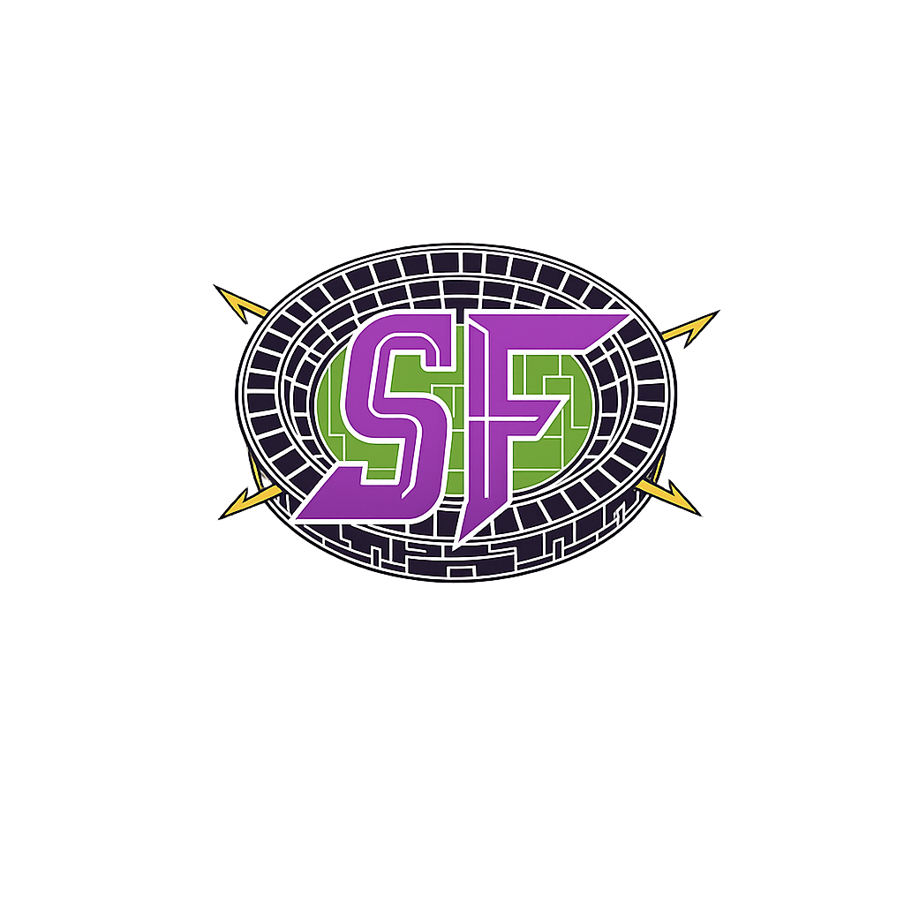

O SportFlyx grava automaticamente, transforma partidas em clipes e métricas e permite patrocínios com entrega comprovada. A quadra controla tudo.
Sem gravação e sem dados, não existe prova de entrega. Sem prova, o patrocínio vira “achismo”. E a quadra deixa dinheiro na mesa.
O SportFlyx transforma a quadra em plataforma: grava, organiza, mede e monetiza. Tudo com uma regra simples: quem controla o espaço, controla a marca.
Descentralizado como uma arena
Inteligência na quadra para capturar e organizar com estabilidade. A nuvem consolida relatórios e histórico. Escala sem virar “trambolho” operacional.
A quadra cria a marca, concede acesso e controla campanhas. A marca acompanha métricas e relatórios com acesso delegado.
Simples o suficiente para operar todo dia. Forte o suficiente para virar produto de patrocínio.
O sistema grava e organiza por jogo/campeonato.
Highlights e métricas prontos para distribuição e prova de entrega.
Quadra cria campanhas; marca acompanha em modo delegado.
Três públicos, um ecossistema. Cada um ganha de um jeito — sem conflito de controle.
Estamos selecionando quadras e marcas para o beta. Prioridade no acesso, aprendizado com o produto e construção do modelo comercial.
Sem spam • só atualizações e convite quando abrir acesso.
No SportFlyx, a quadra é dona do espaço. A marca recebe acesso delegado para acompanhar métricas.
Não. A quadra cria a marca, convida usuários e pode ativar/desativar quando quiser.
Sim — o sistema é pensado para jogos recorrentes, ligas e eventos, com organização por contexto.
Métricas pertencem à quadra e são exibidas para a marca por recorte (campanha/placement/período).